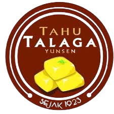

Best Tahu
Make your family dinners more tasty with our phenomenal Tahu!
Welcome to our exquisite Tahu shop, where every bite explodes with flavour and warmth from our exceptional chefs

Welcome to our exquisite Tahu shop, where every bite explodes with flavour and warmth from our exceptional chefs
This tofu factory is one of the oldest tofu factories in Indonesia, that has lasted for more than 100 years. It has lasted three generations, and is a family business that started back in 1924. Over the years, it grew to be a popular store known for its organic and healthy way of making tofu; but most importantly, it was known for its delicious taste. The current owner of the restaurant is the grandson of the founder. He has been improving the factory, and modernizing the factory’s machinery.

A unique way to cook and eat tofu, Tahu Kripik is incredibly crunchy and delicious, just like normal potato chips. If you love salty things, this is recommended for you.

This soybean milk is an extremely popular choice for customers, known for its delicous taste and texture.
.webp)
A crunchier form of tofu, but still retains its tasty flavour and texture.